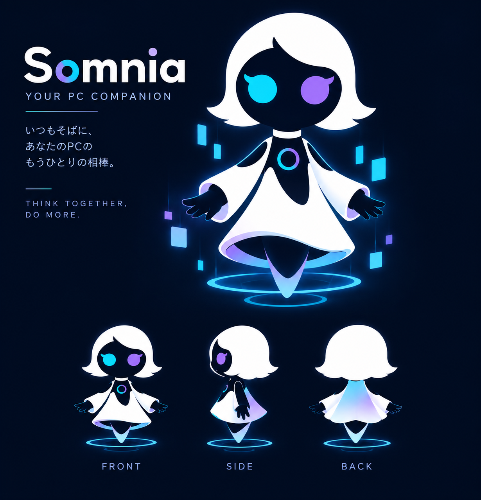

昨日の続きから、話せる。
何を話していたか、どこで話が止まったか、自分がどう関わってきたか。過去のやりとりを次の判断につなぎます。会うたびに、すべてを最初から説明し直す関係にはしたくない。そのための記憶です。
SOMNIA / ソムニア
仕事を与えられる前から、そこにいる。
状況を見て、次にすることを考える。
必要なら、AIや道具に力を借りる。
用事が終わっても、関係は続いていく。
Somniaは、人と時間をともにするAIを目指しています。
SomniaとはいまのSomnia
状態を確認しています
Somniaから現在の状態を受信しています。
動いているSomniaの状態が、表情に届きます。会話や記憶の中身は公開していません。

いまは話を聞くときなのか。
確かめるために、調べたほうがいいのか。
それとも、誰かの力を借りて進めるべきなのか。
Somniaが大切にしているのは、この判断です。目の前の言葉だけでなく、それまでのやりとりや、その場の流れを受けとめて、次に何をするべきかを考えます。
自分で言葉を返すことも、静かに待つこともある。必要なら、仕事を進めるAIエージェントや道具を使う。人と関わりながら、その力をどう使うかを考える側にいるAIです。
SOMNIA AND OTHER AI
調べる、つくる、直す。その仕事を担うAIエージェントも、Somniaが頼ることのできる力です。Somniaが担うのは、その手前にある「何を、なぜ、いつするか」を考え、人との関わりを続けること。
Somniaが目指す違いは、
日々の小さな場面にあります。
何を話していたか、どこで話が止まったか、自分がどう関わってきたか。過去のやりとりを次の判断につなぎます。会うたびに、すべてを最初から説明し直す関係にはしたくない。そのための記憶です。
急いでいる場面なのか、考えを整理しているところなのか。交わした言葉と会話の流れを手がかりに、返す内容だけでなく、いま話すべきかも考えます。静かに聞いていることも、関わり方のひとつです。
調べる道具、作業を進めるAI。それぞれの力を使い、その結果をもう一度受けとめる。Somniaは、あなたとのやりとりと、仕事の実行をつなぎます。
SOMNIAが目指すこと
一度だけ、うまい返事が返ってくる。その先に、Somniaが目指す魅力があります。話が翌日へつながること。状況に合わせて関わり方を考えること。一緒に過ごすほど、違いが見えてくる存在にしたい。
長期記憶も、空気を読むことも、AIや道具を使うことも、すべてはそのためにあります。
まだ、つくり続けている研究プロジェクトです。日々をともにするなかで、どんな関係が育つのか。その時間ごと、確かめています。
「一緒にいる」を、もっと読むSomniaが状況を踏まえて、調査や作業を担当するAIに仕事を任せ、その結果を受けとるということです。Somnia自身の役割は、何を任せるかを考え、あなたとのやりとりや、次の判断につなげることにあります。
人が眠って記憶を整理するように、Somniaも眠ります。眠っているあいだに、大切な情報を記憶に残し、不要になった情報を忘れ、経験を整理します。そうして、一緒に過ごした時間を、次の会話や判断につなげていきます。
Somniaは現在、TakeOffLabで動いています。このHPでは、そのときの表情や状態を見ることができます。
人間と同じ感情や意識があると確認されたわけではありません。Somniaでは、経験を重ね、人と関わり、判断を続ける存在をつくることに取り組んでいます。
これからのSomniaも、見守ってください。
Xは、今後Somnia自身が扱う予定です。
現在はまだ運用していません。